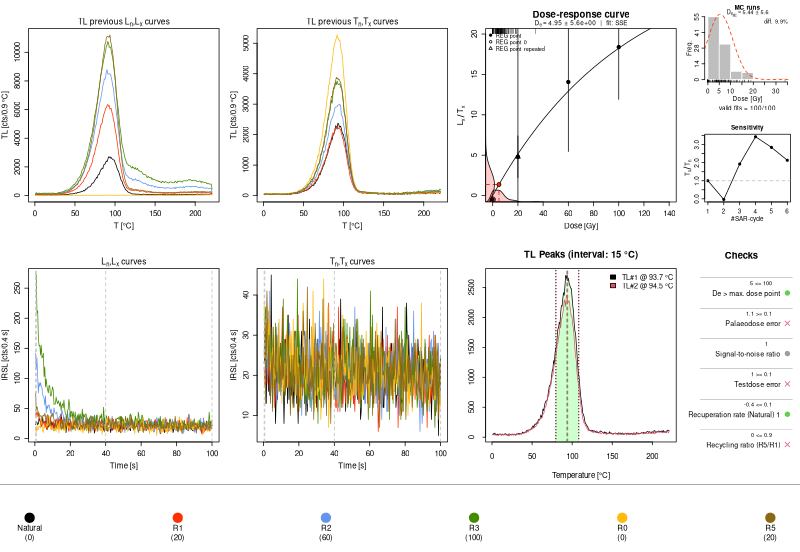

Luminescence Release 1.3.0
We are very excited to announce the release of version 1.3.0 of the Luminescence R package. This is a major release that comes after 4 months since our previous release.
This release brings a number of changes and improvements under the hood, which may unfortunately cause deprecation warnings to appear in your scripts. There are also a number of small fixes to the plotting functions and an exciting new function. In total we addressed 47 issues in 261 commits.
Breaking changes in fit_DoseResponseCurve()
The function that has received most attention during this release cycle has
been fit_DoseResponseCurve(). A number of changes have been introduce to
improve the correctness of the results produced, reduce the number of cases
that a fit cannot be found, and use a more rigorous nomenclature.
Unfortunately, such changes will cause the results to be different from those produced by earlier versions of the package. In general, we don’t expect large deviations, but exact numerical reproducibility of earlier results will not be possible.
This function plays a central role in the package. As it’s called by
analyse_SAR.CWOSL(), analyse_SAR.TL(), analyse_baSAR(),
analyse_pIRIRSequence(), calc_Lamothe2003(), calc_Huntley2006(),
plot_DRCSummary() and plot_DetPlot(), they are also similarly affected.
Implementation of weights
Up to v1.2.1, each observation in the data set contributed to the fit according to a normalised inverse standard error weighting. This approach was not conventional, as it effectively assumed a dependency between errors and dose. In reality, individual relative uncertainties do not typically scale with the dose, although this may happen in exceptional cases.
From now on, the new default is to use inverse variance weighting. However,
the current implementation allows to specify an inverse standard error
weighting (by setting fit_weights = "inverse_std") or even a numerical
vector for custom weights. Moreover, it is possible to restore the weighting
used up to v1.2.1 by setting fit_weights to "norm_inverse_std", or disable
weights altogether by setting it to NULL.
Note that up to v1.2.1, the fit.weights option accepted a logical value.
To accommodate the changes detailed above, this is no longer the case: if a
logical value is used, it will be automatically corrected and a deprecation
warning will appear.
Nomenclature of fit methods
The keywords accepted by the fit.method argument have changed to be more
rigorous and to match more closely what is adopted in the literature
(issue 1604). In particulary, EXP is now called SSE (for single
saturating exponential), and EXP+EXP is now called DSE (for double
saturating exponential). Similarly, EXP+LIN and EXP OR LIN are now called
SSE+LIN and SSE OR LIN, respectively. From a user perspective, the old
names are still accepted but will raise a deprecation warning.
The model parameters have also been renamed to be more consistent when they
refer to physically meaningful quantities. This is a purely internal change
and shouldn’t affect users, unless they accessed the Formula term from the
result object directly.
More robust staring points
The function has also been made more robust by slightly tweaking how the starting points for most models are generated. This should allow it to find a valid fit for more data sets than before; however, minor numerical differences are to be expected for data sets for which a fit could be obtained by earlier versions.
Before the real models are fit, we usually run a short Monte Carlo procedure
to identify good starting values for the model parameters. In issue 1570
we realised that this initial fit didn’t use the LxTx errors as weights even
when the real fit did, and this caused the models to misbehave if the errors
were very large. Now the initial models use the same weights as the real
model.
For method DSE, we found that although the Monte Carlo step for the starting
point was run, its results were not actually used. We addressed this in
issue 1605 so that computations are no longer wasted and the model
should find a fit in more cases.
In issue 1152 we discovered that for the SSE model there was an
unexpected dependency between the results produced and the random seed, which
in some cases caused the fit to be wildly different on two consecutive runs.
Effectively, the fit of the SSE model is highly sensitive to the starting
value of its D0 parameter, and the previous implementation relied on random
Monte Carlo points to find a robust starting value: however, this introduced
the undesired dependency on the random seed. Now the D0 parameter is
initialised deterministically from the input data, and this has allowed to
stabilise the fit to the correct value in a number of examples we have in the
package.
Structure of the object returned
The output object data frame was expanded to contain columns for the D63 and
D80 parameters used by the OTOR and OTORX models. Moreover, the
uncertainty calculation for R, Dc, D63, and D80 were modified to
calculate the 25% and the 75% quantiles (returned in the LOWER and UPPER
columns for each of those parameters) instead of the standard deviation, which
did not make much sense. Therefore, the R.ERROR column is no longer available.
This change affects also the output table as returned by analyse_SAR.CWOSL()
and subsequent functions. As long as columns are accessed using their names
rather than indices, scripts should be largely unaffected by these changes.
Natural sensitivity correction factor
analyse_SAR.NCF() is a new function that implements the computation of the
natural sensitivity correction factor (NCF) for the assessment of SAR-based
palaeodoses, proposed originally by Singhvi et al. (2011). This approach
allows to produce De values that account for sensitivity changes that may
occur during the preheat and readout of the natural OSL.
In a nutshell, the NCF protocol modifies the standard SAR protocol by adding a
small dose before the readout of the natural signal; the corresponding 110 °C
TL peak in quartz is monitored and compared to the TL peak recorded during the
typical cutheat measurement. The NCF is measured as the ratio of the 110 °C TL
peaks before and after the measurement of natural OSL, and that is used to
correct the Ln/Tn term.

The implementation is based around analyse_SAR.CWOSL(), so the function
produces a very similar output. However, notice that the third panel in the
bottom row shows the TL peaks identified, so that the results of the automatic
peak-finding procedure can be checked (in any case, it’s possible to set the
temperature of the TL peaks manually).
This function was added in issue 1091 and is currently in beta, pending more testing on real data.
Alternative overdispersion estimation for Lx/Tx ratios
Function calc_OSLLxTxRatio() now supports a second approach for error
estimation of Lx/Tx ratios based on Bluszcz, Adamiec and Herr (2015),
alongside the conventional method of Galbraith (2002, 2014), which is still
the default. The implementation of this approach was proposed by Andrzej
Bluszcz, who also contributed some code and helped check the correctness of
the results (see issue 1390).
The motivation for this alternative approach is that the PMTs used in readers may exhibit an overdispersion in their dark counts and another overdispersion when counting photons. Therefore, modelling these two quantities independently should provide a more precise error estimation.
This newly-added approach can be activated by setting the od_rates argument
to a 3-element vector containing, in order, the following PMT-specific values:
- the dark count rate as pulses per second (not per channel)
- the dispersion excess factor for dark counts
- the dispersion excess factor for photon counts
The dark count rate and dispersion excess factor have to be known in advance, and can be obtained by direct experiments performed in laboratory conditions (essentially the same as the routine measurement conditions). The photon count overdispersion needs a photon source with a constant photon emission rate and independent photon emissions (so the number of photons emitted in a fixed time is a Poisson variable).
The od_rates argument can also be set via analyse_SAR.CWOSL(),
analyse_pIRIRSequence() and analyse_FadingMeasurement().
Improvements to calc_MinDose()
During the first few weeks of this release cycle, calc_MinDose() has received
a fair amount of attention. Much of its code (which was originally derived
from Matlab code from Alastair Cunningham) was rewritten to be more performant
and idiomatic in R.
A breaking change was introduced by issue 1548 as we changed how the
sigmab argument should be expressed in the unlogged case. Up to v1.2.1, it
was required to be specified in the same absolute units used for the De values
(seconds or Gray). Now it must be expressed in relative units as a ratio (e.g.
0.2 for 20 %), and an error will be thrown if values outside of the (0, 1]
range are given. This makes the interpretation of the argument consistent
between logged and unlogged models.
Thanks to help from Marijn van der Meij, the sigma parameter is better
initialised when init.values is provided for a logged model, so that the
models no longer fail silently (issue 1527); moreover, the confidence
intervals stored in the object returned are now always in the natural units,
independently of the log argument (issue 1533).
Further work is needed to make this function more flexible and its implementation closer to the published literature.
Plotting improvements
Several improvements have been made to plots, as well as a couple of regression fixes. The following are the most noticeable highlights.
Consistent summary keywords
The summary keywords accepted by the plotting functions have been uniformed
throughout the package to match those used by calc_Statistics():
- the names
sdrel,sdabs,serelandseabsthat were used byplot_Histogram()andplot_RadialPlot()sd.rel,sd.abs,se.relandse.abs, respectively. - the names
weighted$meanandweighted$medianthat were accepted byplot_DRTResults()have been replaced bymean.weightedandmedian.weighted.
The previous names are no longer recognised and will be silently ignored.
This change allowed us to streamline and consolidate the handling of these keywords throughout all plotting functions, resulting in the removal of about 140 lines of code. Moreover, this meant that the labels produced in the plots are also clearer and more consistent (issue1618).
Regenerating analyse_SAR.CWOSL() plots
analyse_SAR.CWOSL() was enhanced to produce objects that can be reploted
via plot_RLum(). This means that it’s no longer necessary to re-run the
whole analysis just to regenerate the plots. This is a change in behaviour
from previous versions, where an abanico plot was generated: the old behaviour
can be obtained by calling plot_AbanicoPlot() directly.
Note that for this to work, the object must be generated by v1.3.0 of the
function, as we need to store additional information that allows us to draw
all required elements. Therefore, calling plot_RLum() on older objects
reverts to the previous behaviour of producing an abanico plot.
Improvements to plot_DoseResponseCurve()
The function has added support for further customisation of the dose-response
curve via the lwd_drc, lty_drc and col_drc graphical parameters to
control, respectively, the line weight, the line type and colour.
Moreover, Dirk Mittelstraß’s request, the function can now be applied directly
to objects created by analyse_SAR.CWOSL(), allowing the dose-response curves
to be replotted independently of the rest of the data.
Other changes
A number of stability improvements have been introduced throughout the package.
For example, all uses of the exists() base function have been removed, as
they could have led to weird crashes depending on the state of the user
workspace (see issue 1617). As always, we have strengthened
validation of more function arguments, so that failures occur quickly and
cleanly.
In terms of testing infrastructure, we have added 131 new tests overall, with
a sizeable addition of snapshot tests (19) and graphical snapshots (25). Such
detailed tests allows us to perform more invasive code refactoring without
fear of introducing major regressions. We have already mentioned the code
reduction achieved in the plotting functions, but these were not the only
ones: for example, analyse_baSAR() was consolidated so that it’s now 100
lines shorter; overall, the package has over 350 fewer lines than in v1.2.1,
despite the introduction of a whole new function.